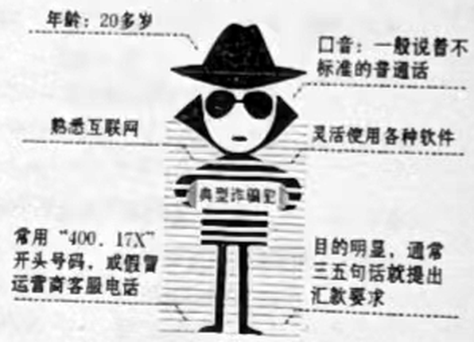
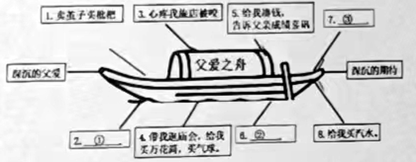

2026—2027 学年第一学期
八年级中期学情诊断语文试卷
第一部分（1—3 题 共 21 分）
1．学校开展了“人无信不立”的主题活动，小冀拟写了一段开场白，请你帮他补充。（7 分）
翻开厚重的历史，拂去岁月的尘埃，我们不难发现：国无德不兴，人无信不立。曾子烹彘，不欺孩童，言出必行的教诲是诚信最初的模样；商鞅立木，取信于民，上行下效的公正是诚信力量的象征；子胥辅吴，不改 chūzhōng，殚精竭虑的谋划是诚信治国的范本。范蠡经商，童叟无欺，从最初的________，到后来的富甲一方是诚信理财的榜样。诚信，是璀璨夺目的阳光，它的光芒点亮希望；诚信，是广袤无垠的大地，它的胸怀温暖世界……重诺守信，人必近之；狡诈欺蒙，人必远之。我们青少年应以诚信 zhāngxiǎn 中国好少年力量。
（1）给下列加点的字注音。（2 分）
教诲（ ） 殚（ ）精竭虑
（2）根据拼音写出汉字。（2 分）
chūzhōng（ ） zhāngxiǎn（ ）
（3）结合语境，从以下成语中，选择其一填入语段画横线处。（1 分）
白手起家 鹤立鸡群 为富不仁 和颜悦色
（4）学校要求为本次活动写一篇新闻稿，请你拟一个标题（不超过 15 字）。（2 分）
2．学校举办“反电信诈骗进校园”的学习活动，请你根据要求完成以下任务。（6 分）
材料一：电信诈骗是指诈骗分子通过电话、网络和短信等方式，编造虚假信息，设置骗局，对受害人实施远程、非接触式诈骗，诱使受害人给犯罪分子打款或转账的犯罪行为。受害者对这类案件缺少警惕，容易轻信来历不明的电话，被骗子套取家庭成员的信息，透露自己的身份证和银行卡信息，甚至向陌生人账户存钱。
材料二：下图是网友给电信诈骗犯画的“肖像”。

（1）下面四位同学的发言，偏离“信”这个议题的一项是（ ）。（2 分）
A．甲：我认为“信”是立身之本。现代社会，诚信是我们的第二张“身份证”；一旦失信，便难以补办。
B．乙：我认为“信”是交友之道。古人云：“道不同，不相为谋”，说的就是这个道理。
C．丙：我认为“信”要从平常事做起。借钱不还，失信于人；考试舞弊，自欺欺人。
D．丁：我认为“信”可以感动他人。不慎撞坏别人车，并没有逃跑，而是留下联系方式，着实让人感动。
（2）请根据上面材料，给下面的“预防电信诈骗知识小卡片”再补充两点。（2 分）
预防电信诈骗知识小卡片 ①不轻信来历不明的电话，尤其是对说着不标准普通话的年轻人的电话要提高警惕。 ②不随便向陌生人透露家人的信息。 ③________________________ ④________________________ |
（3）学校邀请派出所李所长进行“预防电信诈骗”专题讲座。小冀说：“我既没有手机，也没有银行卡，去听了也没用。”你打算怎么劝他呢？（2 分）
3．在空缺处填上恰当的古诗文。（8 分）
古代的文人墨客忠于自然，忠于内心，将对自然的热爱和内心的情感用最诗意的语言来表达。“几处早莺争暖树，①________”是白居易《钱塘湖春行》中生动活泼的早春之景；“树树皆秋色，②________”是王绩《野望》里的山野秋景图；“③________，________”的千古名句则是王维笔下浩瀚无边、奇美壮丽的塞外风光的真实写照（王维《使至塞上》）。“④________，________”是崔颢于《黄鹤楼》中写下登楼远望的明丽景色，意境开阔；“黄鹤一去不复返，⑤________”是崔颢在《黄鹤楼》中抒发了岁月易逝、物是人非的感慨；“鸢飞戾天者，⑥________；经纶世务者，⑦________”吴均的《与朱元思书》更是山川美景对俗世凡心的治愈净化。
第二部分（4—16 题 共 39 分）
一、阅读下面诗歌，回答 4—5 题。（7 分）
【甲】渡荆门送别
唐·李白
渡远荆门外，来从楚国游。
山随平野尽，江入大荒流。
月下飞天镜，云生结海楼。
仍怜故乡水，万里送行舟。
【乙】度荆门望楚①
唐·陈子昂
遥遥去巫峡，望望下章台②。
巴国山川尽，荆门烟雾开。
城分苍野外，树断白云隈③。
今日狂歌客④，谁知入楚来。
①“度”同“渡”，乙诗是陈子昂初次出川赴长安途经荆门时所作。②章台：章华台，春秋时楚国离宫。③白云隈（wēi）：即天尽头。④狂歌客：运用典故“楚狂接舆”，陆通是春秋时期楚国隐士，诗人以陆通自比，表达初入楚地时豪迈兴奋的心情。
4．下列说法有误的一项是（ ）（3 分）
A．【甲】诗首联点题，交代地点和事由，描绘了舟过荆门时所见的景色。
B．【甲】诗颔联，山岭本是静止的事物，却如影随形，这里作者化动为静，使景物富于动态。
C．【乙】诗前两联表明作者已经远离巫峡，进入楚境。
D．【乙】诗“城分苍野外，树断白云隈”，写城邑分布于苍野之外，树木苍翠一望无际。
5．请写出【甲】【乙】两诗的尾联各表达了作者怎样的感情？（4 分）
二、阅读下面文言文，回答 6—9 题。（13 分）
【甲】元丰六年十月十二日夜，解衣欲睡，月色入户，欣然起行。念无与为乐者，遂至承天寺寻张怀民。怀民亦未寝，相与步于中庭。庭下如积水空明，水中藻、荇交横，盖竹柏影也。何夜无月？何处无竹柏？但少闲人如吾两人者耳。
（选自苏轼《记承天寺夜游》）
【乙】余①尝游于京师侯家富人之园，见其所蓄②，自绝徼③海外奇花石无所不致，而所不能致者惟竹。吾江南人斩竹而薪之。其为园，必购求海外奇花石，或④千钱买一石、百钱买一花，不自惜。然有竹据其间，或芟⑤而去焉。曰：“毋⑥以是占我花石地。”而京师人苟⑦可致一竹，辄⑧不惜数千钱。然才遇霜雪，又槁⑨以死。以其难致而又多槁死，则人益贵之。而江南人甚或笑之曰：“京师人乃宝吾之所薪！”
（节选自唐顺之《竹溪记》）
①余：我。②所蓄：收藏储蓄。③徼（jiào）：远的边地。④或：有的人。⑤芟（shān）：锄除。⑥毋：不要。⑦苟：如果。⑧辄：总是。⑨槁：枯干。
6．根据提示，解释加点词的词义。（4 分）
温故知新法 | 但当涉猎，见往事耳。 （《孙权劝学》） | （1）但少闲人如吾两人者耳。 |
课内勾连法 | 香远益清 | （2）则人益贵之 |
成语推断法 | 薪火相传 | （3）京师人乃宝吾之所薪 |
查字典法 | “绝”的释义主要有： ①断，断绝。②停止，消失。③极，非常。 ④独一无二的，绝妙的。 | （4）自绝徼海外奇花石无所不致。 ________。（只写序号） |
7．请将下列句子翻译成现代汉语。（4 分）
（1）庭下如积水空明，水中藻、荇交横，盖竹柏影也。
（2）然有竹据其间，或芟而去焉。
8．下列加点词语意思不相同的一项是（ ）。（3 分）
A．尝射于家圃 余尝游于京师侯家富人之园
B．然有竹据其间 其间千二百里
C．盖竹柏影也 盖以诱敌
D．学而时习之 吾江南人斩竹而薪之
9．请任选一文，谈谈你获得的启示。（2 分）
三、阅读下面的文字，回答 10—13 题。（12 分）
父爱之舟
吴冠中
①是昨夜梦中的经历吧，我刚刚梦醒！
②朦胧中，父亲和母亲在半夜起来给蚕宝宝添桑叶……每年卖茧子的时候，我总跟在父亲身后，卖了茧子，父亲便给我买枇杷吃……
③我又见到了姑爹那只小小渔船。父亲送我离开家乡去投考学校以及上学，总是要借用姑爹这只小渔船。他同姑爹一同摇船送我。带了米在船上做饭，晚上就睡在船上，这样可以节省饭钱和旅店钱。我们不肯轻易上岸，花钱住旅店的教训太深了。有一次，父亲同我住了一间最便宜的小客栈，夜半我被臭虫咬醒，遍体都是被咬的大红疙瘩，父亲心疼极了，叫来茶房，掀开席子让他看满床乱爬的臭虫及我的疙瘩。茶房说没办法，要么加点钱换个较好的房间。父亲动心了，但我年纪虽小却早已深深体会到父亲挣钱的艰难。他平时节省到极点，自己是一分冤枉钱也不肯花的，我反正已被咬了半夜，只剩下后半夜，不肯再加钱换房子……恍恍惚惚我又置身于两年一度的庙会中，能去看看这盛大的节日确是无比的快乐，我欢喜极了。我看各样彩排着的戏人边走边唱。看高跷走路，看虾兵、蚌精、牛头、马面……最后庙里的菩萨也被抬出来，一路接受人们的膜拜。卖玩意儿的也不少，彩色的纸风车、布老虎、泥人、竹制的花蛇……父亲回家后用几片玻璃和彩色纸屑等糊了一个万花筒，这便是我童年唯一的也是最珍贵的玩具了。万花筒里那千变万化的图案花样，是我最早的抽象美的启迪者吧！
④父亲经常说要我念好书，最好将来到外面当个教员……冬天太冷，同学们手上脚上长了冻疮，有的家里较富裕的女生便带着脚炉来上课，上课时脚踩在脚炉上，大部分同学没有脚炉，一下课便踢毽子取暖。毽子越做越讲究，黑鸡毛、白鸡毛、红鸡毛、芦花鸡毛等各种颜色的毽子满院子飞。后来父亲居然从和桥镇上给我买回来一个皮球，我快活极了，同学们也非常羡慕。夜晚睡觉，我将皮球放在自己的枕头边。但后来皮球瘪了下去，必须到和桥镇上才能打气，我天天盼着父亲上和桥去。一天，父亲突然上和桥去了，但他忘了带皮球，我发觉后拿着瘪皮球追上去，一直追到栋树港，过了渡船，向南遥望，完全不见父亲的背影，到和桥有十里路，我不敢再追了，哭着回家。
⑤我从来不缺课，不逃学。读初小的时候，遇上大雨大雪天，路滑难走，父亲便背着我上学，我背着书包伏在他背上，双手撑起一把结结实实的大黄油布雨伞。他扎紧裤脚，穿一双深筒钉鞋，将棉袍的下半截撩起扎在腰里，腰里那条极长的粉绿色丝绸汗巾可以围腰两三圈，还是母亲出嫁时的陪嫁呢。
⑥初小毕业时，宜兴县举办全县初小毕业会考，我考了总分七十几分，属第三等。我在学校里虽是绝对拔尖的，但到全县范围一比，还远不如人家。要上高小，必须到和桥去念县立鹅山小学。和桥是宜兴的一个大镇，鹅山小学就在镇头，是当年全县最有名气的县立完全小学，设备齐全，教师阵容强，方圆二十里之内的学生都争着来上鹅山。因此要上鹅山高小不容易，须通过入学的竞争考试，我考取了。要住在鹅山当寄宿生，要缴饭费、宿费、学杂费，书本费也贵了，于是家里粜稻、卖猪，每学期开学要凑一笔不少的钱。钱，很紧，但家里愿意将钱都花在我身上。我拿着凑来的钱去缴学费，感到十分心酸。父亲送我到校，替我铺好床被，他回家时，我偷偷哭了。这是我第一次真正心酸的哭，与在家里撒娇的哭、发脾气的哭、打架的哭都大不一样，是人生道路中品尝到的新滋味了。
⑦第一学期结束，根据总分，我名列全班第一。我高兴极了，主要是可以给父亲和母亲一个天大的喜讯了。我拿着级任老师孙德如签名盖章，又加盖了县立鹅山小学校章的成绩单回家，路走得比平常快，路上还又取出成绩单来重看一遍那紧要的栏目：全班六十人，名列第一，这对父亲确是意外的喜讯，他接着问：“那朱自道呢？”父亲很注意入学时全县会考第一名朱自道，他知道我同朱自道同班，我得意地、迅速地回答：“第十名。”正好缪祖尧老师也在我们家，也乐开了：“茅草窝里要出笋了！”
⑧我唯一的法宝就是考试，从未落过榜，我又要去投考无锡师范了。
⑨为了节省路费，父亲又向姑爹借了他家的小小渔船，同姑爹两人摇船送我到无锡。时值暑天，为避免炎热，夜晚便开船，父亲和姑爹轮换摇橹，让我在小舱里睡觉。但我也睡不好，因确确实实已意识到考不取的严重性，自然更未能领略到满天星斗、小河里孤舟缓缓夜行的诗画意境，船上备一只泥灶，自己煮饭吃，小船既节省了旅费，又兼做宿店和饭店。只是我们的船不敢停到无锡师范附近，怕被别的考生及家长们见了嘲笑。
⑩老天不负苦心人，他的儿子考取了。送我去入学的时候，依旧是那只小船，依旧是姑爹和父亲轮换摇船，不过父亲不摇橹的时候，便抓紧时间为我缝补棉被，因我那长期卧病的母亲未能给我备齐行装。我从舱里往外看，父亲那弯腰低头缝补的背影挡住了我的视线。后来我读到朱自清先生的《背影》时，这个船舱里的背影便也就分外明显，永难磨灭了！不仅是背影时时在我眼前显现，鲁迅笔底的乌篷船对我也永远是那么亲切，虽然姑爹小船上盖的只是破旧的篷，远比不上绍兴的乌篷船精致，但姑爹的小小渔船仍然是那么亲切，那么难忘……我什么时候能够用自己手中的笔，把那只载着父爱的小船画出来就好了！
⑪庆贺我考取了颇有名声的无锡师范，父亲在临离无锡回家时，给我买了瓶汽水喝。我以为汽水必定是甜甜的凉水，但喝到口，麻辣麻辣的，太难喝了。店伙计笑了：“以后住下来变了城里人，便爱喝了！”然而我至今不爱喝汽水。
⑫师范毕业当个高小的教员，这是父亲对我的最高期望。但师范生等于稀饭生，同学们都这样自我嘲讽。我终于转入了极难考进的浙江大学代办的工业学校电机科，工业救国是大道，至少毕业后职业是有保障的。幸乎？不幸乎？由于一些偶然的客观原因，我接触到了杭州艺专，疯狂地爱上了美术。正值那感情似野马的年龄，为了爱，不听父亲的劝告，不考虑今后的出路，毅然沉浮于茫无边际的艺术苦海，去挣扎吧，去喝一口一口失业和穷困的苦水吧！我不怕，只是不愿父亲和母亲看着儿子落魄潦倒。我羡慕过没有父母、没有人关怀的孤儿、浪子，自己只属于自己，最自由，最勇敢。
⑬……醒来，枕边一片湿。
10．下面是小冀同学根据本文做的情节思维导图，请你帮他补充完整。（3 分）

11．请你仿照句式，写出自己对本文“父爱”的理解。（2 分）
示例：父爱是不图回报的默默付出，父爱是________，父爱是________。
12．本文语言饱含真情，从文中画线句中任选一组，体会加点词语蕴含的情感。（2 分）
①这是我第一次真正心酸的哭，与在家里撒娇的哭、发脾气的哭、打架的哭都大不一样，是人生道路中品尝到的新滋味了。
②我不怕，只是不愿父亲和母亲看着儿子落魄潦倒。
13．阅读全文，请你梳理作者的人生简历，回答后面问题。（5 分）
（1）阅读全文，补充作者人生简历。（2 分）
吴冠中个人简历 ①初小毕业，学校成绩拔尖。 ②高小毕业，成绩第一。 ③________________________ ④转入浙江大学代办的工业学校电机科，想走工业救国之路。 ⑤________________________ |
（2）结合原文和下面链接材料，从作者的人生选择变化中你收获了什么？（3 分）
【链接材料一】吴冠中，一代画宗，人民艺术家，一生致力于“油画民族化”和“国画现代化”，取得巨大成就，被誉为“影响二十世纪中国美术的艺术家”“中国的梵高”。
【链接材料二】我追求全世界的共鸣，更重视十几亿中华儿女的共鸣，这是我探索油画民族化和中国画现代化的初衷，这初衷至死不改。——吴冠中
四、名著阅读，回答 14—16 题。（7 分）
今年是红军长征胜利 90 周年，学校开展“深读红星魂”主题活动。请你根据《红星照耀中国》内容，完成以下任务。
14．小冀绘制了长征路线图，还需要补充一个“长征精神关键词”。请你从下面路线图中任选一个具体事件，说说我们青少年应继承和发扬怎样的长征精神。（2 分）
血战湘江 → 遵义会议 → 四渡赤水 → 巧渡金沙江 → 强渡大渡河 → 飞夺泸定桥 → 翻雪山 → 过草地
15．一个好的书名，往往内涵丰富，请你说说对《红星照耀中国》这一书名的理解。（2 分）
16．诗人流沙河在《理想》这首诗里说：“平凡的人因有理想而伟大，有理想者就是一个‘大写的人’。”请从《红星照耀中国》中选择一个人物，写出他的理想以及为此做出的努力。（3 分）
第三部分（17 题 40 分）
17．阅读下面文字，根据要求写作。
生活里总会有许多难忘的回忆，在这些回忆里总会有那么一个人让你难以忘怀。他（她）给你安慰，他（她）让你感动，他（她）送你温暖，他（她）助你成长……请以“回忆里的那个人”为题目写一篇作文。
要求：
①内容健康积极；
②表达真情实感；
③写一篇写人叙事的文章；
④不要套写抄袭；
⑤字数不少于 600 字；
⑥不要出现真实的地名、人名和校名。